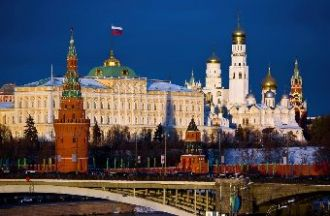
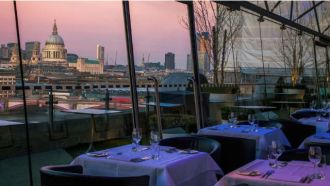
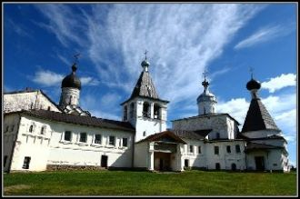

О, Москва, ты - жемчужина светлой великой страныИ в тебя, уж поверь, невозможно никак не влюбиться.Все широты твои, как сокровища рая, ясны,

I am sittingIn the morningAt the dinerOn the corner
I am waitingAt the counterFor the manTo pour the coffee
つないだ手の愛しさがたぶん恋だということにまだ気づかない夏の始まりさあ 手をつなごうキミの笑顔が消えてしまわぬように
То ли рядом с шофёром, то ли в тесном купеЯ мотаюсь по жизни по великой стране.Позади километры оборванных струн,Впереди миражи неопознанных лун.
Наша доченька Полина -Украшение семьи!О тебе писать картины,Сочинять стихи должны!
C'est pas l'histoire d'un jourQui rime avec amour,Plutôt un long séjourMais pas: un "pour toujours"
Я так люблю, когда приходят письма.Я вам пришлю свои мечты и мысли.На чистый лист легко ложатся строчки,А в строчках - жизнь. Они спешат к вам почтой.
Словно в сумрак эпох прокрутилась времён кинолента,Но сегодняшним днём этот образ едва ли вчерашен.Над холмами встаёт стародавняя крепость Дербента,
Всегда тепло встречает Чехии столица,Из разных стран и континентов ждет гостей.И посреди её красот повсюду лица

Вологодские просторы,Край покойный и приветный.Дивно-синие озёра -Отраженье выси светлой.
20.04.2016г.
21.40ч.
Мы в этой роще книг и слов -
Месяцеслов…
Мы в этой гавани любви -
Как янтари…
Валентинов деньВ кафе играют старый джаз,На столике мерцают свечи,И эта музыка для насЗвучит в февральский, снежный вечер.
Припев:Вдох-выдох и мы опять играем в любимых.Пропадаем и тонем в нежности заливах,Не боясь и не тая этих чувств сильных.
В конце туннеля яркий свет слепой звезды, Подошвы на сухой листве оставят следы, Еще под кожей бъётся пульс и надо жить,
Последний поезд - вагон пустой,Я помашу тебе вслед рукой,Ты растворишься опять в кольце темноты.Черта огней по стеклу бежит,
I walked across an empty landI knew the pathway like the back of my handI felt the earth beneath my feetSat by the river and it made me complete
Turn your magic onUmi she'd sayEverything you want's a dream awayAnd we are legends every dayThat's what she told me
Не всегда, не у всех получаетсяИногда половинки теряютсяЗасыпая, не там просыпаются где-тоЯ вошла, ты забыл про дыхание
Цей білий сніг дику гору обліг. Навіть сліду тут нема. Безлюдне неначе царство, а царюю я сама. І завиває вітер, хуга в серці зла.
Ты помнишь крылья за спиноюБыли, но остались навсегдаВ свете тех прекрасных юных дней.Ты помни, ты всегда со мною,Но обид по кругу не унять